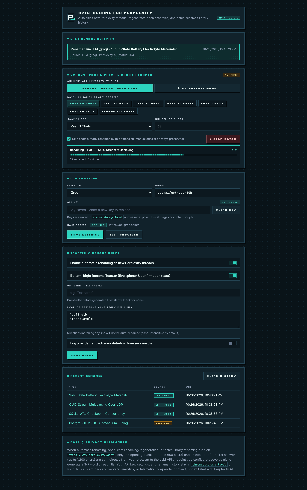

FIRST TURN ONLY
Inspects last_backend_uuid and is_related_query so
follow-up questions never overwrite an existing thread’s title.
Auto-Rename for Perplexity watches only the first answer stream of a
brand-new perplexity.ai thread, summarizes the Q&A into a scannable
3–7 word title, and saves it straight to your Perplexity sidebar
(HTTP 204)—without altering Perplexity’s page styles.
Perplexity names every thread after the raw opening words of your prompt—filling your Library with conversational filler and pasted stack traces. Auto-Rename fixes that automatically after the first answer completes.
Inspects last_backend_uuid and is_related_query so
follow-up questions never overwrite an existing thread’s title.
Detects manual sidebar renames via a private Symbol tag and permanently
locks out auto-renaming for that context_uuid.
Skip throwaway lookups (^define\b, ^translate\b) with zero
tokens spent, or prepend project tags like [Research].
Perplexity’s own fonts, colors, and React DOM stay 100% untouched. The pixel HUD lives in an isolated ShadowRoot and unmounts when idle.
Bundled offline with SIL Open Font License pixel fonts (Silkscreen &
Pixelify Sans)—giving the extension’s own toaster, popup, and settings a
tactile pixel HUD aesthetic while leaving Perplexity’s website completely untouched.


Subtle bottom-right status HUD on perplexity.ai—easy to turn off
anytime with a single toggle in the toolbar popup.
#ppx-autorename-toast Shadow DOM so zero CSS rules
ever collide with Perplexity’s styles.
LLM or the
instant offline HEURISTIC fallback.

Everything you reach for daily lives right inside the 380px Chrome
toolbar popup—no digging through tabs.
HTTP 204).
TEST LLM.
[Research] with immediate broadcast to open Perplexity tabs.

Power-user controls for custom endpoints, regex exclusions, clickable thread history, and transparent data disclosure.
perplexity.ai/search/<backend_uuid> and can be cleared in one
click.
Click any provider below to inspect its preconfigured fast model, wire protocol, and built-in reasoning-budget safeguards. Don’t want to configure an API key? The offline keyword heuristic works out of the box.
Zero brittle DOM scraping and zero API-key exposure. Auto-Rename clones Perplexity’s
SSE stream at the network boundary via Response.body.tee() while locking
your API key strictly inside the background Service Worker.

page.js wraps window.fetch at
document_start, splits /rest/sse/perplexity_ask via
response.body.tee() so Perplexity’s UI streams at native speed, and
submits same-origin set_thread_title (HTTP 204). Has zero
access to storage or API keys.
content.js evaluates shouldRename() (skipping follow-ups,
manual edits, and regex exclusions), renders the isolated Shadow-DOM pixel HUD, and
coordinates bounded 600ms / 1800ms retry backoff on transient 5xx
errors.
background.js is the only module in the codebase that
calls getApiKey() (enforced by automated tests). Calls your chosen LLM
with a 10s AbortController, strips <think> tags, and
falls back cleanly to heuristicTitle().
const response = await originalFetch.apply(this, args);
if (isAskSseRequest && response.ok && response.body?.tee) {
const [pageBranch, observerBranch] = response.body.tee();
// Branch 2 assembles SSE frames asynchronously without touching UI rendering
observeAskStream(observerBranch, requestMeta);
// Branch 1 returns immediately to Perplexity's React app at native speed
return new Response(pageBranch, {
status: response.status,
statusText: response.statusText,
headers: response.headers,
});
}Works in Google Chrome, Brave, Arc, Microsoft Edge, Vivaldi, and any Chromium browser supporting Manifest V3.
chrome://extensions in your browser and flip on
Developer mode (top-right corner).
manifest.json). Done!
Clone the repository, bundle all 5 entrypoints with esbuild in ~30ms,
verify all 53 tests, and load the extension/ folder unpacked:
git clone https://github.com/<your-username>/auto-rename-for-perplexity.git
cd auto-rename-for-perplexity
npm install
npm run build && npm testchrome.storage.local
and read exclusively inside the extension’s background MV3 Service
Worker (src/background/service-worker.js). Neither
perplexity.ai nor content scripts nor even the popup DOM ever read back
the raw key string. Zero developer servers or analytics exist.
heuristicTitle()) to generate clean
3–7 word titles locally with zero network requests. You can also use free-tier keys
from Groq, Google AI Studio (Gemini), OpenRouter :free models, or a
local Ollama server.
last_backend_uuid and
is_related_query. And if you manually rename a thread in Perplexity’s
sidebar, the extension detects that request and locks out auto-renaming for that
thread permanently.